本文最后更新于：2020年7月28日 凌晨
1. Mobject所派生的子类

2. Mobject的主要变量与属性
2.1 CONFIG
CONFIG = {
"color": WHITE,
"name": None,
"dim": 3,
"target": None,
}2.2 __init__()函数:
submobjects = []:每个Mobject都有自己的submobjects列表,列表里面的每个元素也是Mobject,这样有利于对嵌套的Mobject进行整体操作,如对一群图形一起平移等等动画的实现updaters = []:一系列的更新函数组成,如:def update_text(obj): obj.next_to(dot,RIGHT,buff=SMALL_BUFF)就可以作为一个updater,有
add_updater()方法进行添加:# author:TB,由于3b1b的函数有改进,本代码进行了修改 class AddUpdater(Scene): def construct(self): dot = Dot() text = TextMobject("Label").next_to(dot,RIGHT,buff=SMALL_BUFF) self.add(dot,text) # Update function 更新函数 def update_text(obj): obj.next_to(dot,RIGHT,buff=SMALL_BUFF) # Add update function to the objects # 把更新函数加给对象 text.add_updater(update_text) # 如果想简洁，lambda表达式如下： # text.add_updater(lambda m: m.next_to(dot,RIGHT,buff=SMALL_BUFF)) # 此时下面的remove_updater(update_text)不能继续使用，需要改为clear_updaters self.play(dot.shift,UP*2) # Remove update function text.remove_updater(update_text) self.wait()效果如下:
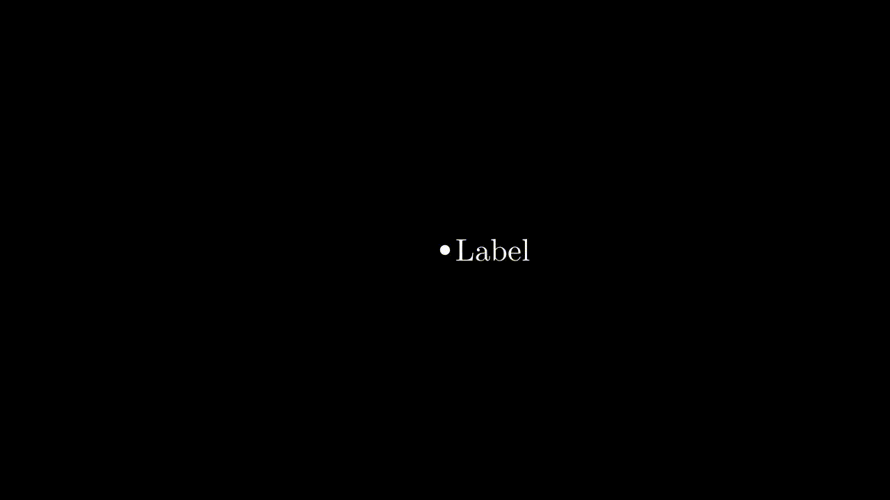
详细见下面3.3.2的介绍
updating_suspended = False:是否暂停更新points = np.zeros((0, self.dim)):坐标,默认为原点,维度由属性dim决定
2.3 其他函数里面产生的变量
saved_state:自己的一份备份,可以用来恢复之前的状态array_attr:初始为["points"]列表z_index_group:暂时不知道有什么用
2.4 Mobject的一些抽象概念
family:如果将Mobject看作父节点,submobjects列表中的Mobject看作子节点,则对每个Mobjects都会产生一棵树,这个树里面的所有节点成为这个Mobject的family
family没有真正的实体,但是Mobject内有一个函数叫
get_family()可以返回这个概念:def get_family(self): # 如果对map函数不理解,请自行查找Python map()函数 # 递归得到submobjects,代码非常简洁 sub_families = list(map(Mobject.get_family, self.submobjects)) # 使用chain的原因是可能每个submobject可能是不同的类型 all_mobjects = [self] + list(it.chain(*sub_families)) # 去重 return remove_list_redundancies(all_mobjects)Mobject的很多函数也用到了这个概念
2.5 Mobject的属性
自身可迭代
假如有Mobject变量mob,则mob[0]是self本身,mob[1]以及更大的索引是subMobject
自身有长度
自身长度为submobject列表长度+1
3. Mobject的主要方法
3.1 属性的处理
reset_points()self.points = np.zeros((0, self.dim))
add(*mobjects)将自己的submobjects列表中加入mobjects
注意:不能加入自己
add_to_back(*mobjects)将自己的submobjects列表末尾加入mobjects
注意:如果加入的mobjects中有的在自己的列表中已经存在,则按照加入的mobjects顺序存放
remove(*mobjects)submobjects列表移除对应的mobjects
注意:如果mobjects某些元素不在submobjects列表则不会有任何反应
3.2 图像静态显示
get_image(camera=None)根据传入的camera类对应的参数(如角度,距离等等)返回一个图像(以PIL.Image的格式)
注意:应该用不到这个(如果不是自己开发代码)
show(camera=None)无动画根据传入的camera类对应的参数(如角度,距离等等)显示自己
save_image(name=None)将自己图像保存到宏定义
VIDEO_DIR位置,名字为name如果未传入名字,则默认名字为自己的str方法得到的数值deepcopy()
返回一个自己的副本,副本的改变与不会影响到自己
copy()
浅拷贝,与深拷贝对应
generate_target(use_deepcopy=False)
3.3 更新(跟踪)函数
$ ^{^*}$
update(dt=0, recursive=True)底层函数,一般制作的时候用不到,但是仍然列举出来以备不时之需
参数含义
dt:每帧运动速率是多少recursive:递归进行submobjects列表的Mobject的update函数执行过程
如果updaters的某一项
update_function列表里面有参数dt,则执行update_function(dt),否则执行update_function(),并根据recursive判断是否递归到submobjects列表中的每一项
get_updaters():得到updaters[]
get_family_updaters():得到family的所有updaters
add_updater(update_function, index=None, call_updater=True)参数含义
update_function:更新函数index:更新函数的索引call_updater:我也不知道这个有啥用(¦3[▓▓],3b1b的代码也没找到一个用过这个参数的TODO:
call_updater什么意思,欢迎留言执行过程
将自己的
updaters列表加入update_function,位置在index,插入方法同python列表的insert方法,并决定是否立即执行例子:
class UpdateFunctionWithDt(Scene): def construct(self): sun = Dot(color=RED).scale(3) earthOrbit=Circle(color=WHITE).scale(2) earth=Dot(color=BLUE).scale(2) earth.move_to(earthOrbit.point_from_proportion(0)) self.earthOffset=0 moonOrbit= Circle(color=WHITE).move_to(earth) moon =Dot(color=YELLOW) moon.move_to(moonOrbit.point_from_proportion(0)) self.moonOffset=0 def update_earth(mob,dt): rate=dt*0.1 mob.move_to(earthOrbit.point_from_proportion((self.earthOffset + rate)%1)) self.earthOffset += rate def update_moonOrbit(mob): mob.move_to(earth) def update_moon(mob,dt): rate=dt*0.2 mob.move_to(moonOrbit.point_from_proportion((self.moonOffset + rate)%1)) self.moonOffset += rate earth.add_updater(update_earth) moonOrbit.add_updater(update_moonOrbit) moon.add_updater(update_moon) self.add(earthOrbit,moonOrbit,sun,earth,moon) self.wait(5) self.wait()效果如下:
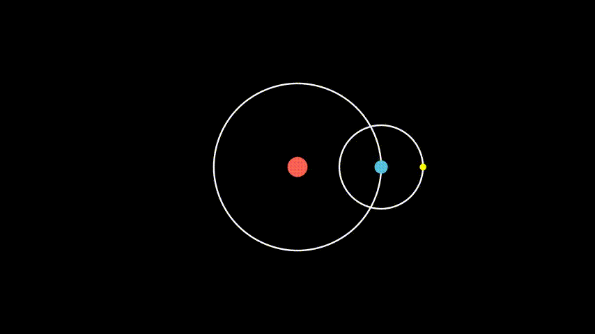
dt的决定速度:
class WhatIsDt(Scene): def construct(self): sun = Dot(color=RED).scale(3) earthOrbit=Circle(color=WHITE).scale(2) earths = [Dot(color=i).scale(2) for i in[RED,BLUE]] earths = VGroup(*earths) earths.move_to(earthOrbit.point_from_proportion(0)) self.earthOffsets = [0]*2 texts = VGroup(*[Text("dt*0.%d"%i,size=0.5,font="Lucida Console") for i in [1,2]]) def update_earth_factory(index): def update_earth(mob,dt): rate = dt*0.1*(index+1) mob.move_to(earthOrbit.point_from_proportion((self.earthOffsets[index] + rate)%1)) self.earthOffsets[index] += rate return update_earth def update_text_factory(index): def update_text(mob): mob.next_to(earths[index],LEFT,SMALL_BUFF) return update_text for i in [0,1]: earths[i].add_updater(update_earth_factory(i)) texts[i].add_updater(update_text_factory(i)) self.add(earthOrbit,sun,earths,texts) self.wait(5)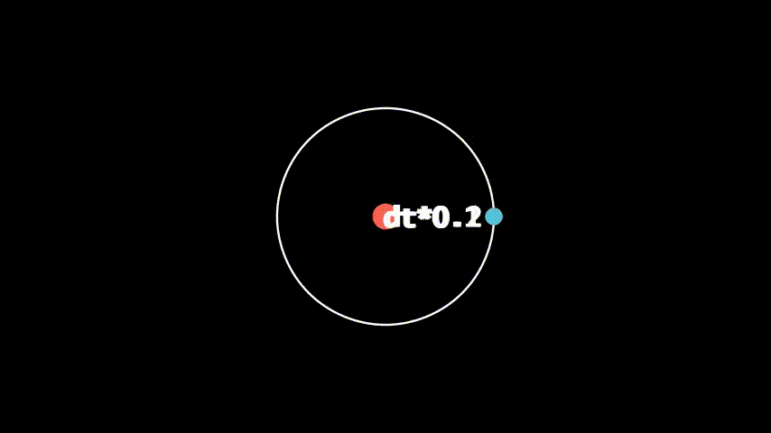
remove_updater(update_function):很明显与
add_updater相反clear_updaters(recursive=True):清除所有的
update_function,如果recursive为True则submobjects列表的所有update_function清除存疑:
recursive为True貌似如果subMobjects里面还套有subMobjects,则内层的不能被清除?match_updaters(mobject):将mobject的updater全部复制给自己(自己的原来的updaters失效)
suspend_updating(recursive=True):略
resume_updating(recursive=True)略
get_time_based_updaters():得到参数含有
dt的updaterhas_time_based_updater():有参数含有
dt的updater
3.4 变换函数
apply_to_family(func):对每个家庭成员实行func函数
shift(*vectors):平移,vector的维数为dim,如果输入多个vector则平移的终点为这几个vector的向量和
如
.shift(UP*2,LEFT)和shift(UP*2+LEFT)是一个效果scale(scale_factor, **kwargs):参数:
scale_factor:缩放因子**kwargs:默认行为是围绕mobject的中心进行缩放。参数about_edge可以是向量，指要围绕mobject的哪一侧进行缩放,否则，如果给about_point一个值，则相对于该点进行缩放。
about_edge:相对边class AddUpdater(Scene): def construct(self): circles = [Circle(arc_center = LEFT*i*2) for i in range(3)] vg = VGroup(*circles) line = Line(np.array([-10,vg.get_top()[1],0]),np.array([10,vg.get_top()[1],0])) text = TextMobject("about\_edge") text.next_to(line,UP,buff=SMALL_BUFF) self.add(line,vg,text) self.play(vg.scale,2,{"about_edge":UP}) self.wait()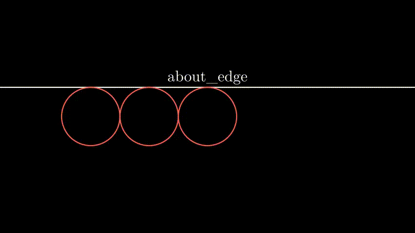
如果
about_edge为方向的线性组合,则会按照对应的边进行阻隔,以UP+RIGHT为例子:class AddUpdater(Scene): def construct(self): circles = [Circle(arc_center = LEFT*i*2) for i in range(3)] vg = VGroup(*circles) line = Line(np.array([-10,vg.get_top()[1],0]),np.array([10,vg.get_top()[1],0])) line1 = Line(np.array([vg.get_right()[0],-10,0]),np.array([vg.get_right()[0],10,0])) text = TextMobject("about\_edge1") text.next_to(line,UP,buff=SMALL_BUFF) text1 = TextMobject("about\_edge2") text1.next_to(line1,RIGHT,buff=SMALL_BUFF) self.add(line,line1,vg,text,text1) self.play(vg.scale,2,{"about_edge":np.array(UP+RIGHT)}) self.wait()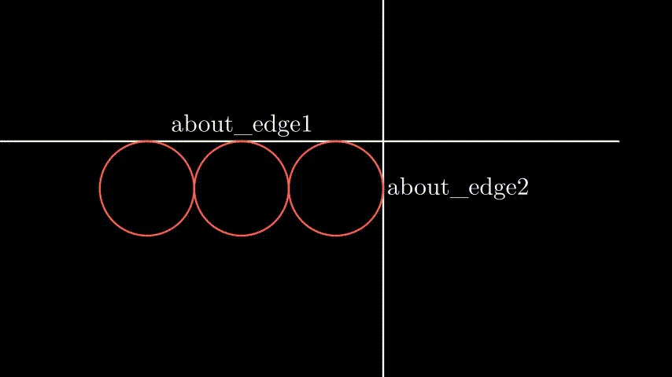
about_point:相对点class AddUpdater(Scene): def construct(self): circles = [Circle(arc_center = LEFT*i*2) for i in range(3)] vg = VGroup(*circles) dot = Dot(point=circles[0].get_center()) text = TextMobject("about\_point") text.next_to(dot,DOWN,buff=SMALL_BUFF) self.add(dot,vg,text) self.play(vg.scale,2,{"about_point":dot.get_center()}) self.wait()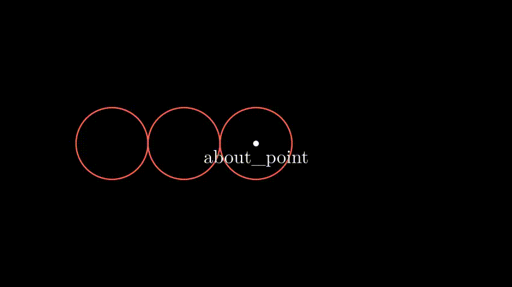
执行过程
放大或缩小指定的因子
rotate(angle, axis=OUT, **kwargs):学过初中物理就应该知道右手定则,在数学,物理中,旋转的方向就是右手定则中的(大拇指)方向
class myRotateScene(ThreeDScene): def construct(self): dot = Dot() text = TextMobject("about\_point",color=RED) text.next_to(dot,DOWN,buff=SMALL_BUFF) axes = ThreeDAxes() self.add(dot,text,axes) self.set_camera_orientation(theta=-PI/4,phi=PI/4) self.play(text.rotate,PI/2,{"axis":OUT}) self.wait()
上图text的起始平面是X-Y平面,UP为y轴正方向,大家可以自行尝试更改axis方向(注意self.play函数不代表角度从0到PI/2的渐近变化所以只要看起始帧和终止帧)
**kwargs还可以接受相对点about_point:class myRotateScene(ThreeDScene): def construct(self): dot = Dot() text = TextMobject("about\_point",color=RED) text.next_to(dot,DOWN,buff=SMALL_BUFF) axes = ThreeDAxes() self.add(dot,text,axes) self.set_camera_orientation(theta=-PI/4,phi=PI/4) self.play(text.rotate,PI,{"axis":OUT,"about_point":dot.get_center()}) self.wait()这个相对点旋转其实是线性代数里面的旋转矩阵造成的结果,如果角度是180度,效果是关于这个点对称
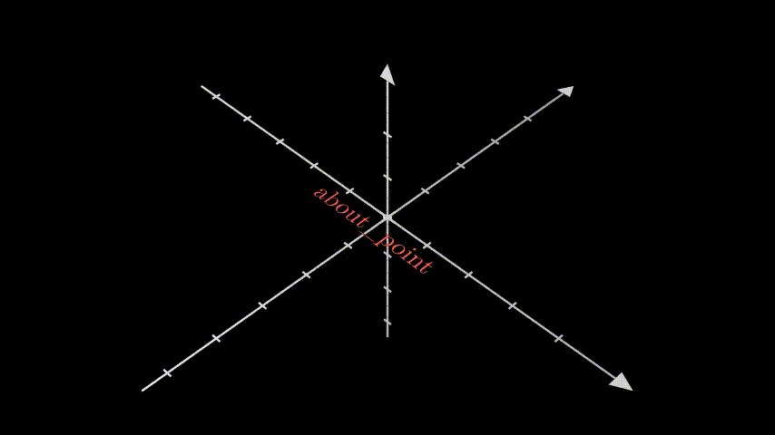
flip(axis=UP, **kwargs):翻转,其实就是
rotate180度,其他参数同rotatestretch(factor, dim, **kwargs):在对应的维度伸缩
factor倍这个函数与
scale的用法一样,也会有about_point和about_edgeclass Stretch(Scene): def construct(self): text = Text("stretch") self.play(text.stretch,2,1) self.wait(2)apply_function(function, **kwargs):对所有family成员的点坐标都进行
function处理,所以function必须是一个处理一个点的函数例如对于二维图形:
class myScene(Scene): def func(self,point): return point*2 def construct(self): circle = Circle() circle2 = Circle() self.add(circle,circle2) circle.apply_function(self.func) self.play(Write(circle)) self.wait()默认的
about_point为ORIGIN,可以看出来实现了apply_function的会大一倍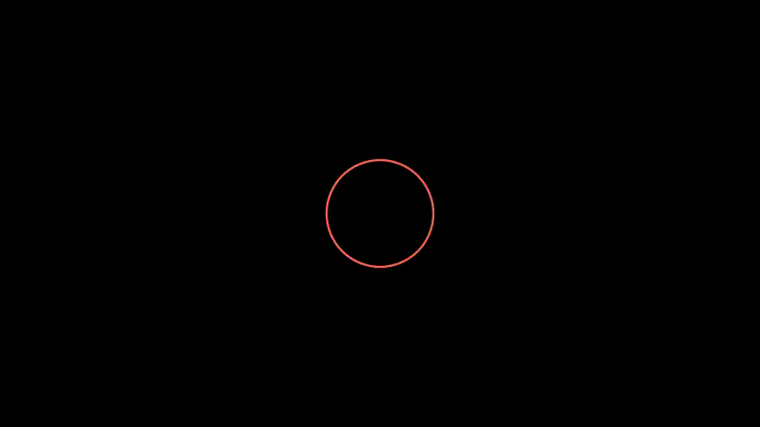
apply_function_to_position(function):移动图像中心到function(self.get_center())
class myWag(Scene): def x2(self,x): return x*2 def construct(self): circle = Circle() circle.move_to(RIGHT) self.add(circle) self.play(circle.apply_function_to_position,{"function":self.x2}) self.wait()apply_function_to_submobject_positions(function):略
apply_matrix(matrix, **kwargs):matrix为变换矩阵,这个就是对Mobject点对应的向量乘以matrix变换矩阵,学过线性代数或者计算机视觉或者看过3b1b的线性代数的人应该不陌生apply_complex_function(function, **kwargs):同理于
apply_function(function, **kwargs),只不过这里的function接受一个平面复数,即complex(x, y)wag(direction=RIGHT, axis=DOWN, wag_factor=1.0):分析源码得到如下处理步骤:
对所有含有坐标属性家庭成员进行步骤2到5的操作
向axis对应维度投影,如axis=UP/DOWN则向y轴投影,即保留y值不变,得到对应维度的向量列表alphas
将向量列表alphas归一化到[0,1],归一方法如下:
执行幂运算
每个点在direction方向平移$\vec{alphas}_i^{“}$
例子:
factor=1
class myWag(Scene): def construct(self): squares = [Square() for i in range(3)] for i in range(-1,2): squares[1+i].move_to(RIGHT*3*i) self.add(*squares) self.play(squares[0].wag,{"direction":UP,"axis":RIGHT,"wag_factor":0.1}, squares[1].wag,{"direction":UP,"axis":RIGHT,"wag_factor":1}, squares[2].wag,{"direction":UP,"axis":RIGHT,"wag_factor":2}) self.wait()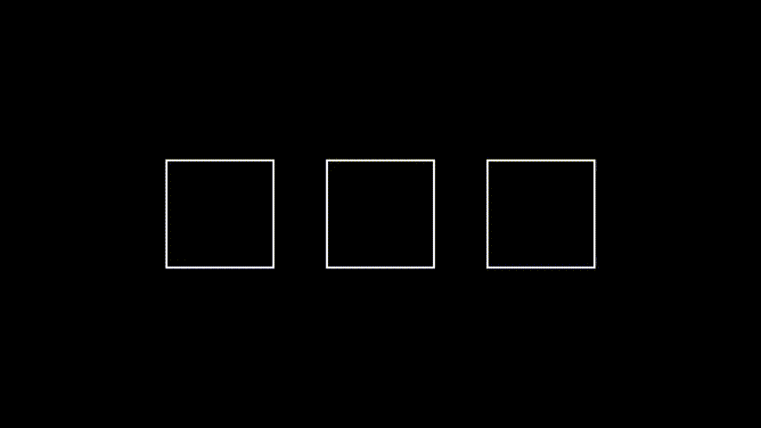
从左到右factor依次为0.1,1,2,都是向上wag的,具体怎么理解大家可以自己理解,比较难以表述
reverse_points():调换点的顺序:
class myWag(Scene): def construct(self): circle = Circle().scale(2) texts = [TextMobject("p"+str(i)).scale(0.5) for i in range(len(circle.points))] def update_factory(index): def update_func(mob): mob.move_to(circle.points[index]) return update_func for i in range(len(texts)): texts[i].add_updater(update_factory(i)) self.add(circle,*texts) self.wait(1) self.play(circle.reverse_points) self.wait(2)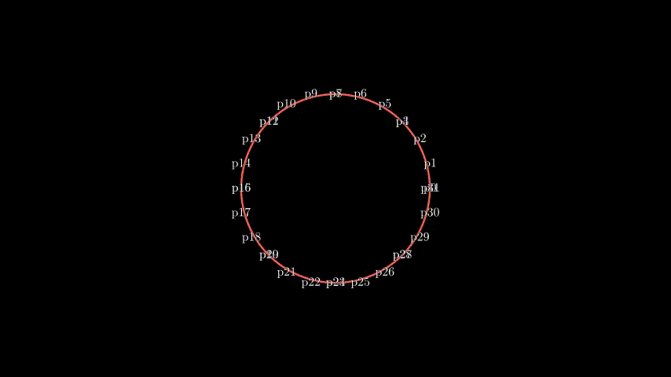
注意play函数不能很好表现reverse的现象,如果看顺序,上图顺序从逆时针变成了顺时针
repeat(count):会出现重影的特效
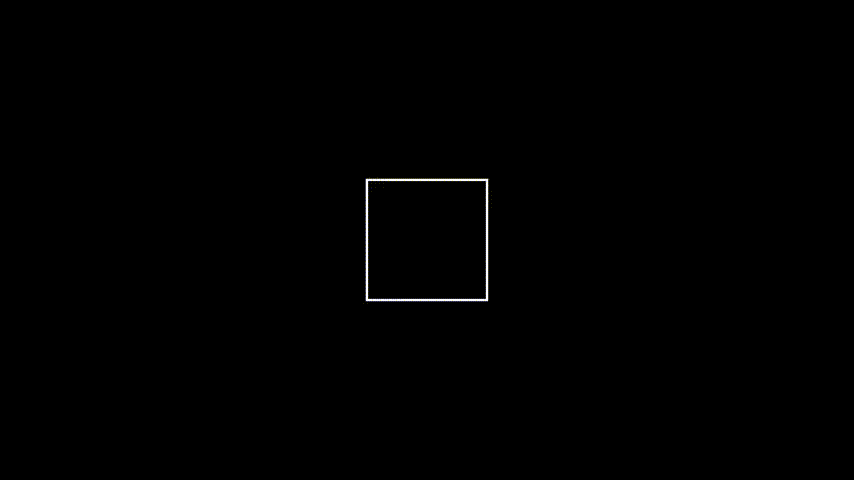
apply_points_function_about_point(func, about_point=None, about_edge=None):相对点或边对自己的所有点左边应用函数
3.5 位置函数
center():此处center为动词:到中心
class Repeat(Scene): def construct(self): square = Square() dot=Dot() self.add(square,dot) self.play(square.shift,RIGHT) self.play(square.shift,RIGHT) self.play(square.shift,UP) self.play(square.center) self.wait()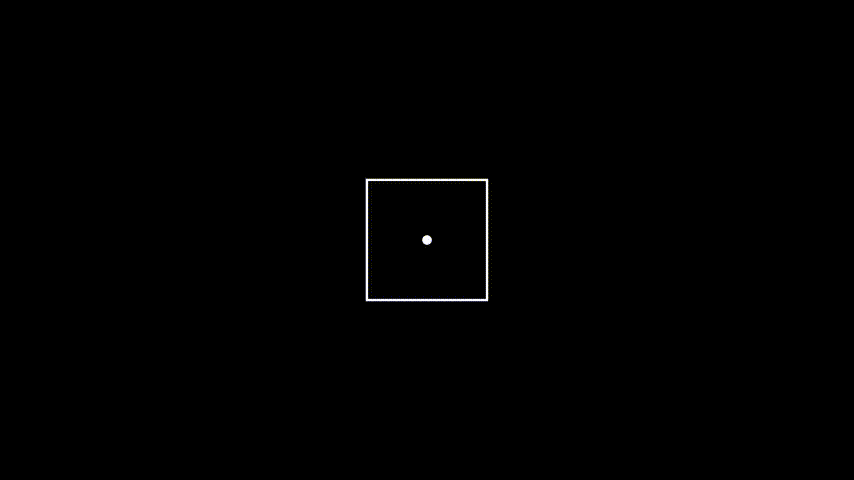
align_on_border(direction, buff=DEFAULT_MOBJECT_TO_EDGE_BUFFER):在边界对齐,buff为和边界的距离
class Align(Scene): def construct(self): square = Square() self.play(square.align_on_border,LEFT+UP) self.wait(2)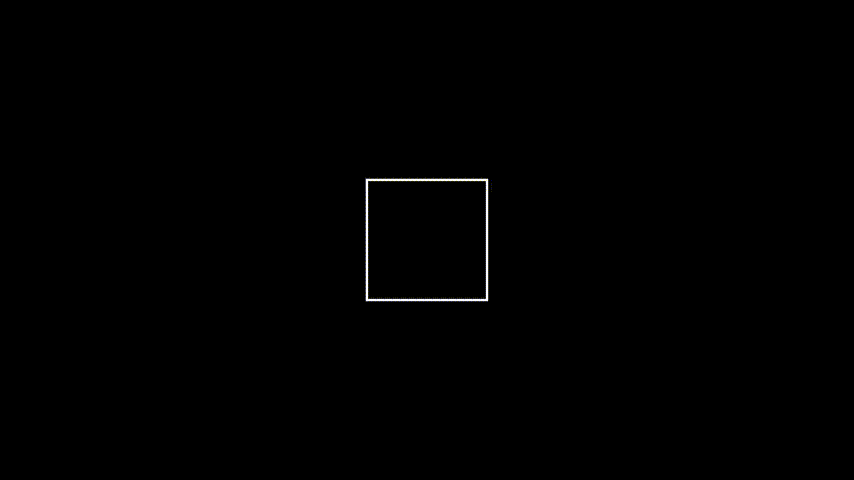
to_corner(corner=LEFT + DOWN, buff=DEFAULT_MOBJECT_TO_EDGE_BUFFER):到某一个角
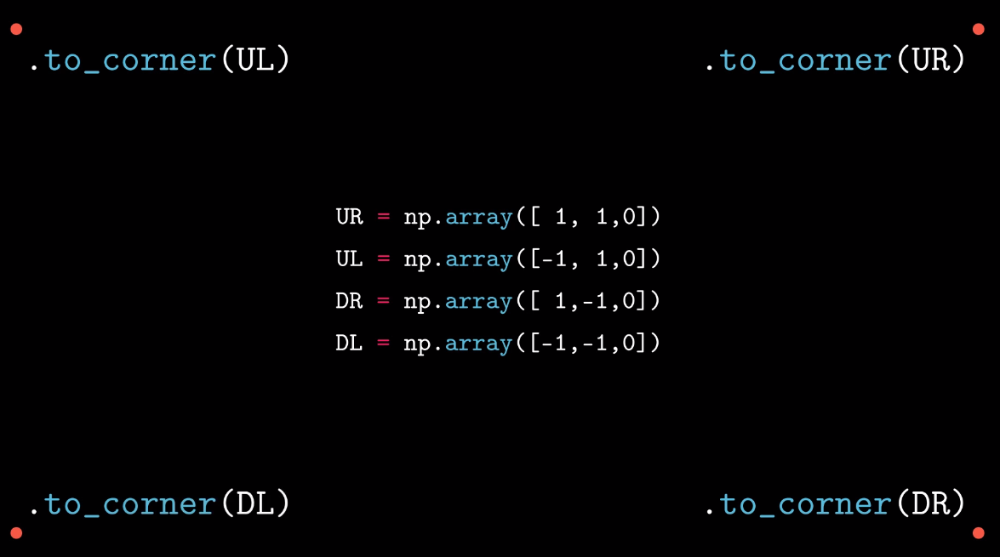
to_edge(edge=LEFT, buff=DEFAULT_MOBJECT_TO_EDGE_BUFFER):到某一边
next_to(mobject_or_point,direction=RIGHT, buff=DEFAULT_MOBJECT_TO_MOBJECT_BUFFER,aligned_edge=ORIGIN,submobject_to_align=None,index_of_submobject_to_align=None, coor_mask=np.array([1, 1, 1]),):参数分析:
mobject_or_point:Mobject或者一个点坐标direction:方向buff:相聚的距离aligned_edge:对齐的边submobject_to_align:对齐的子Mobject,此参数要求Mobject是一个列表性质的Mobjectindex_of_submobject_to_align:如果submobject_to_align不为空,则需要指定对应的是哪一个Mobject
coor_mask:掩膜,术语来自数字信号处理/数字图像处理,不懂可以自行搜索,在这里即为1的地方才进行next_to,如果为0,则对应的坐标不进行next_to变换
执行过程:
如果mobject_or_point是点则next_to的对象就是点,否则为由参数决定的Mobject的中心
shift_onto_screen(**kwargs):is_off_screen():是否超出屏幕范围
rescale_to_fit(length, dim, stretch=False, **kwargs):将某一个方向的长度拉伸至length,可以按照scale方式拉长或者stretch方式拉长
class RescaleToFit(Scene): def construct(self): ellipse = Ellipse() length = ellipse.length_over_dim(0) self.play(ellipse.rescale_to_fit,length,1,{"stretch":True}) self.wait(2)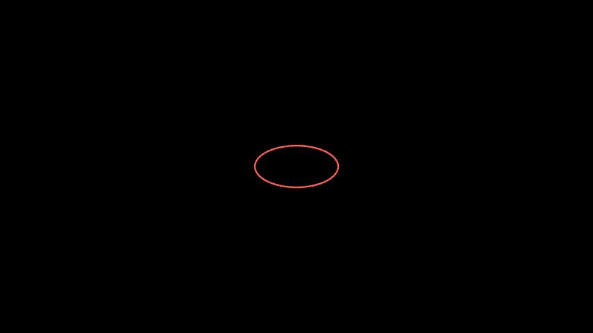
stretch_to_fit_width(width, **kwargs)stretch_to_fit_height(height, **kwargs)stretch_to_fit_depth(depth, **kwargs)set_width(width, stretch=False, **kwargs)set_height(height, stretch=False, **kwargs)set_depth(depth, stretch=False, **kwargs)
set_coord(value, dim, direction=ORIGIN):将dim对应的坐标设置为value,direction表示设置什么的坐标,如direction为RIGHT则表示设置图像的最右端点的dim维度的坐标为value
set_x(x, direction=ORIGIN)set_y(y, direction=ORIGIN)set_z(z, direction=ORIGIN)
space_out_submobjects(factor=1.5, **kwargs):自己scale factor倍,子mobject缩小1/factor倍
move_to(point_or_mobject, aligned_edge=ORIGIN,coor_mask=np.array([1, 1, 1])):与next_to相近,不过区别是:next_to表示的是边界的距离，而不是中心距离

replace(mobject, dim_to_match=0, stretch=False):将位置移动到mobject,并且大小做一些改变,具体看源码
surround(mobject,dim_to_match=0,stretch=False,buff=MED_SMALL_BUFF):包围(默认情况下,等边长的正多边形规则物体效果很好,对于不等变长的形状最好启用stretch)
class Surround(Scene): def construct(self): circle = Circle() square = Square().shift(UP*2) self.add(circle,square) self.play(circle.surround,square) self.wait(2)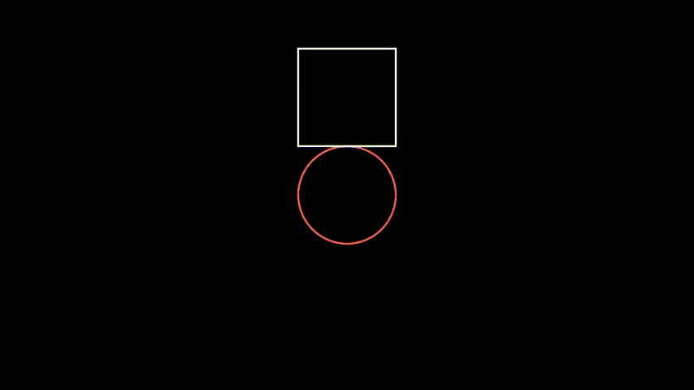
put_start_and_end_on(start, end):将起点终点重置为start,end
class PutStartAndEndOn(Scene): def construct(self): arc = Arc(PI/3) texts = [TexMobject(i,color=RED) for i in ["startPoint","endPoint"]] texts[0].add_updater(lambda x: x.move_to(arc.get_start())) texts[1].add_updater(lambda x: x.move_to(arc.get_end())) self.add(arc, *texts) self.play(arc.put_start_and_end_on,ORIGIN,(UP+RIGHT)*2) self.wait()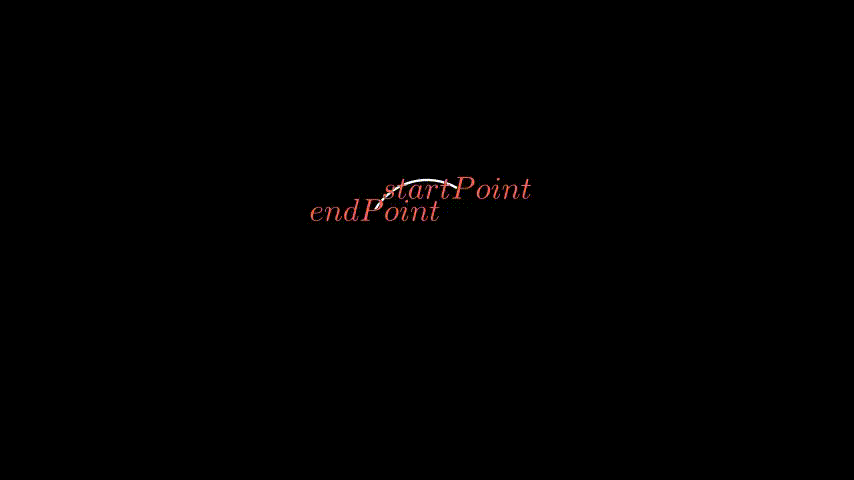
add_background_rectangle(color=BLACK, opacity=0.75, **kwargs):增加背景方块,此方块是可以随着Mobject变化而变化的
class BackgroundRectangle(Scene): def construct(self): circle = Circle(color=RED) circle.add_background_rectangle(color=BLUE,opacity=0.4) self.add(circle) self.play(circle.stretch,2,1) self.wait()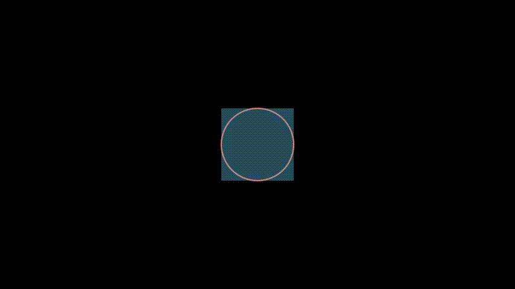
add_background_rectangle_to_submobjects(**kwargs):略
add_background_rectangle_to_family_members_with_points(**kwargs):略
3.6 颜色函数
set_color(color=YELLOW_C, family=True):设置颜色,family指家庭成员是否也跟着变色
set_color_by_gradient(*colors):渐变色,可以是两个或多个颜色的列表
class main(Scene): def construct(self): qed = TexMobject('This is a Text').scale(1.25) qed.set_color_by_gradient(RED,YELLOW,GREEN,BLUE) self.play(Write(qed)) self.wait(3)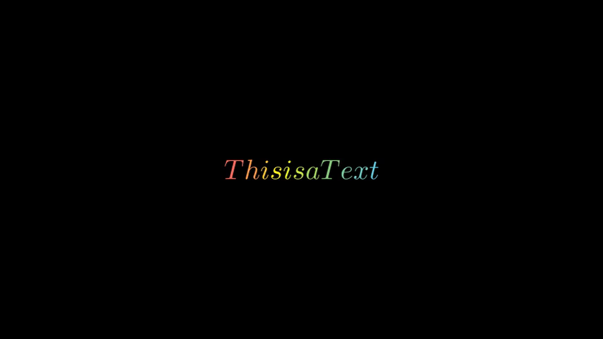
set_colors_by_radial_gradient(center=None, radius=1, inner_color=WHITE, outer_color=BLACK):辐射状渐变颜色,半径为radius
set_submobject_colors_by_gradient(*colors):给子Mobject设置渐变颜色
set_submobject_colors_by_radial_gradient(center=None, radius=1, inner_color=WHITE, outer_color=BLACK):同理,略
fade_to(color, alpha, family=True):褪色为某一个颜色,alpha为插值系数,alpha在[0,1]之间,越接近1,褪色越厉害
class FadeTo(Scene): def construct(self): text = TexMobject("This is a Text") self.add(text) self.play(text.set_colors_by_radial_gradient,{"inner_color":WHITE,"outer_color":RED}) self.play(text.fade_to,BLUE,1) self.wait()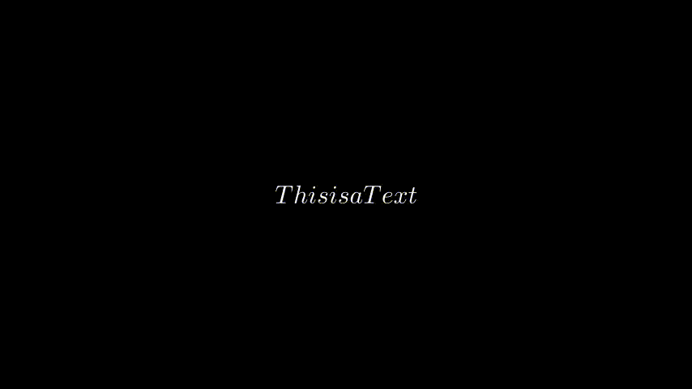
get_color():返回颜色
fade(darkness=0.5, family=True):褪色为黑色,darkness为灰度
3.7 恢复函数
save_state(use_deepcopy=False):保存状态,并确定是否使用深拷贝
restore():恢复之前状态
3.8 其他的getter方法
reduce_across_dimension(points_func, reduce_func, dim):nonempty_submobjects():返回Submobject的subSubMobject不为空的Submobject
get_merged_array(array_attr):得到Mobject以及其子Mobject的array_attr属性的列表
get_all_points():得到Mobject与其子Mobject属性所有的点
get_num_points():得到自己的点的数量(不包含子Mobject)
get_extremum_along_dim(points=None, dim=0, key=0):沿着dim方向(dim为0表示x方向,1表示y方向….),给出坐标的极值,key<0表示得到最小值,key>0表示得到最大值,key=0表示得到中值
get_critical_point(direction):画一个框，框住mobject。 这样的盒子有9个“关键点”：4个角，4个边缘中心，中心。 这将返回其中之一。
direction什么方向就返回什么
对其进行封装有如下的函数:
get_edge_centerget_topget_bottomget_rightget_leftget_zenithget_nadir
get_cornerget_center
get_boundary_point(direction):得到某个方向的最远的点
class FadeTo(Scene): def construct(self): square = Square() circle = Circle().shift(2 * RIGHT + 1 * DOWN) shapeGroup = VGroup(square,circle) points = [] nums = 10 for i in range(nums): points.append(shapeGroup.get_boundary_point(np.array((np.cos(2*PI*i/nums),np.sin(2*PI*i/nums),0)))) polygon = Polygon(*points,color=BLUE) dots = [Dot(point=i) for i in points] self.add(shapeGroup,*dots) self.play(Write(polygon)) self.wait(2)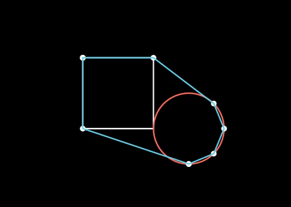
length_over_dim(dim):dim方向的长度
此方法封装的方法:
get_widthget_heightget_depth
get_coord(dim, direction=ORIGIN):在dim方向得到direction对应的极值,直接使用意义不大
get_x(direction=ORIGIN)get_y(direction=ORIGIN)get_z(direction=ORIGIN)
get_start,get_end,get_start_and_end:得到点的起点终点,起点和终点
has_points,has_no_points:是否有点这属性
3.9 匹配函数
match_color(mobject):匹配mobject的颜色
match_dim_size(mobject, dim, **kwargs):匹配dim方向的长度,
**kwargs和rescale_to_fit()使用方法相同match_widthmatch_heightmatch_depth
match_coord(mobject, dim, direction=ORIGIN):按照get_coord()得到对应的Mobject坐标,然后设置
match_xmatch_ymatch_z
3.10 排列函数
arrange(direction=RIGHT, center=True, **kwargs):submobject列表的全部变量进行排队,按照direction的方式排队,center决定了是否排完队跑到中心
**kwargs参考next_toclass Arrange(Scene): def construct(self): square = Square() square.add(Dot(point=np.array([-1,-2,0]))) square.add(Square().move_to(np.array([3,0,0]))) square.add(Circle().move_to(np.array([5, 2, 0]))) self.add(square) self.play(square.arrange,{"center":False}) self.wait(2) self.play(square.arrange,{"direction":UP,"center":False}) self.wait(2)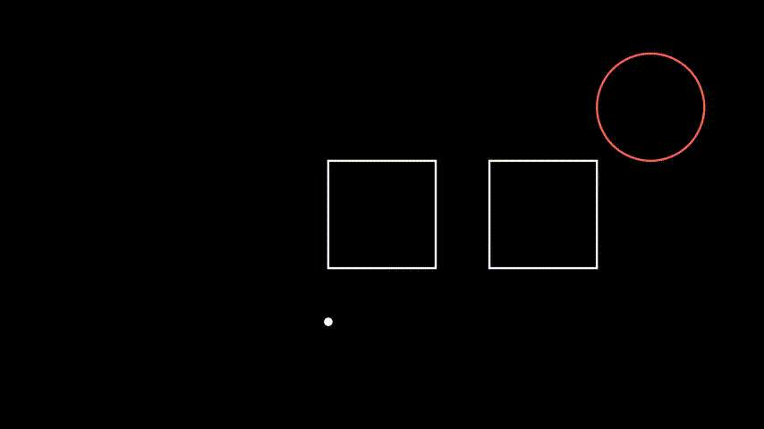
arrange_in_grid(n_rows=None, n_cols=None, **kwargs):对submobject列表重拍列
如果默认无参数,重拍列至方阵,否则n_rows和n_cols最多选一个,排列为对应的行或列,如果都填,则排列为n_rows行
**kwargs参考next_to函数class ArrangeInGrid(Scene): def construct(self): square = Square() square.add(Circle().move_to(np.array([-1,-2,0]))) square.add(Circle().move_to(np.array([3,0,0]))) square.add(Circle().move_to(np.array([5, 2, 0]))) square.add(Circle().move_to(np.array([5, -3, 0]))) self.add(square) self.play(square.arrange_in_grid) self.wait(2)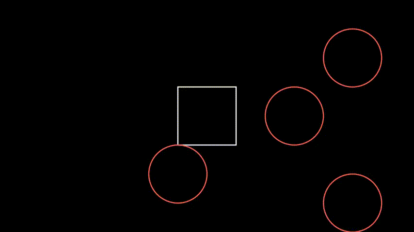
sort(point_to_num_func=lambda p: p[0], submob_func=None):对点进行排序,这个一般意义不大,可以自己编写排序方法
shuffle(recursive=False):打乱submobject的列表排序,以及是否递归进行
3.11 对齐函数
align_to(mobject_or_point, direction=ORIGIN, alignment_vect=UP):对齐,direction表示对齐的边是哪边
mob1.align_to（mob2，UP）垂直移动mob1，以便其顶部边缘与mob2的顶部边缘对齐。 mob1.align_to（mob2，alignment_vect = RIGHT）水平移动mob1，使其中心位于mob2中心的正上方/正下方
class AlighTo(Scene): def construct(self): square = Square() circle = Circle().shift(2 * RIGHT + 1 * DOWN).scale(2) self.add(square,circle) self.play(circle.align_to,square,RIGHT) self.wait(2)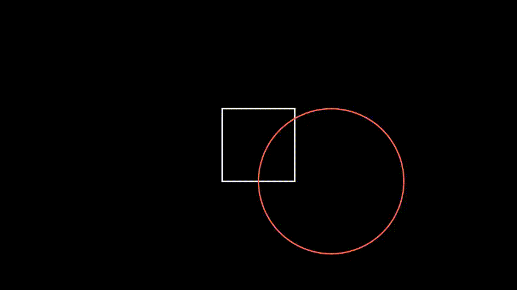
add_n_more_submobjects(n):加入n个submoject
3.12 抽象方法
align_data(mobject):align_points(mobject):align_submobjects(mobject):对齐submobjects
null_point_align(mobject):get_point_mobject(center=None)align_points_with_larger(larger_mobject)interpolate_color(mobject1, mobject2, alpha):颜色插值
interpolate(mobject1,mobject2,alpha, path_func=straight_path):Mobject插值
become_partial(mobject, a, b):以仅成为mobject一部分的方式设置点。 输入0 <= a <b <= 1确定要成为mobject的哪一部分。
become(mobject, copy_submobjects=True):变成另一个的样式
class Become(Scene): def construct(self): square = Square() square.submobjects.append(Circle().move_to(np.array([-1,-2,0]))) square.submobjects.append(Circle().move_to(np.array([3,0,0]))) square.submobjects.append(Circle().move_to(np.array([5, 2, 0]))) square.submobjects.append(Circle().move_to(np.array([5, -3, 0]))) text = Text("text") self.add(square) self.play(square.become,text) self.play(text.shift,UP) self.wait(2)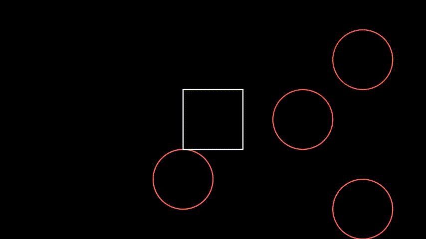
4. 小结
Mobject的用法还是很多的,空闲时间写了很多天才写完,希望自己能用熟练
本博客所有文章除特别声明外，均采用 CC BY-SA 4.0 协议 ，转载请注明出处！